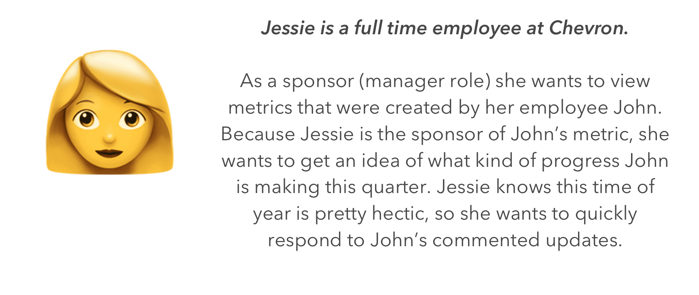
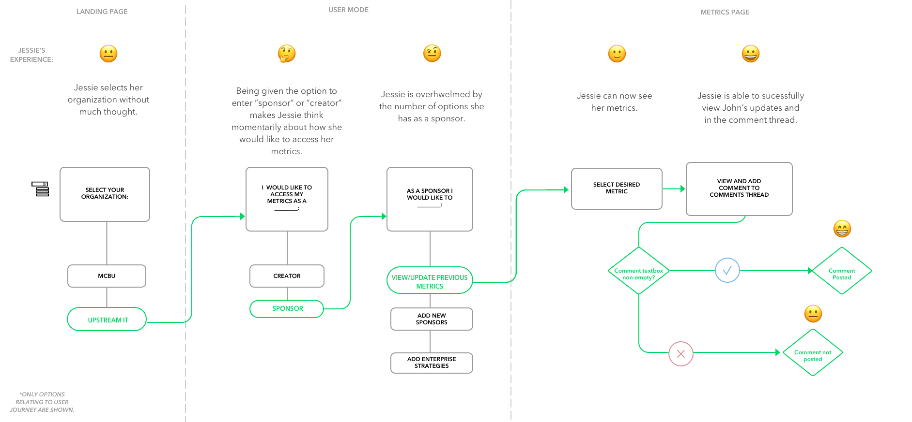
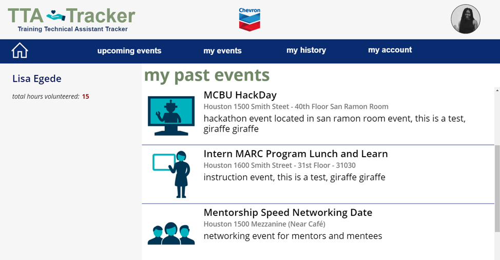
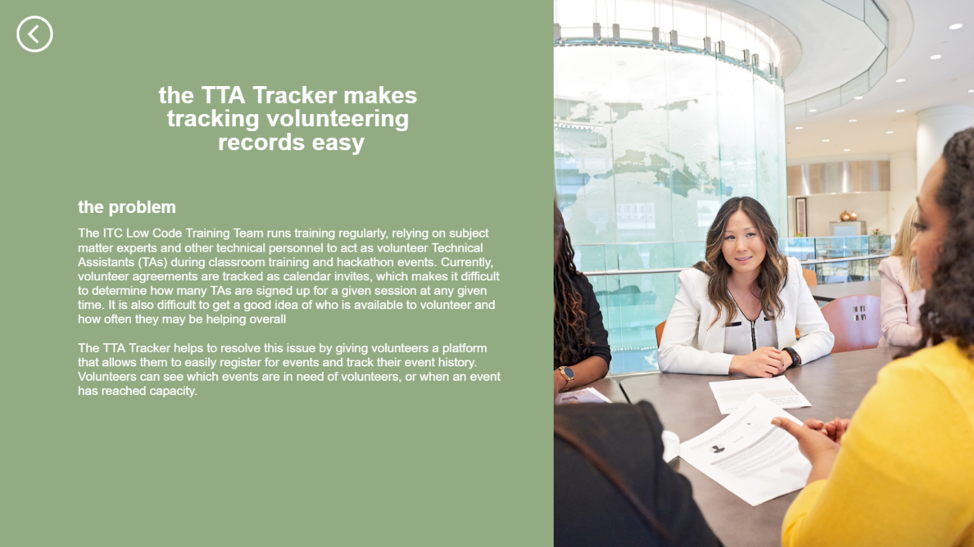

Research, Product, and Technical Projects
Hi, I’m Lisa!
I’m a mixed-methods researcher finishing my HCI Ph.D. at Carnegie Mellon, with a background in computer science and software development. I study how people from different backgrounds make sense of technology and decide whether they can trust it to meet their needs.
I’ve worked on everything from internal tools at Chevron to AI evaluation at Microsoft and IBM Research. I enjoy getting close to a problem, figuring out what people need, and working with others to turn what we learn into something useful. Lately, I’m especially interested in bringing that experience into managing and evaluating AI products for high-stakes contexts.
When I joined Chevron, the IT department was in the middle of a move to cloud tools. Longtime employees were adjusting to new systems, and the application they used to track performance metrics had some frustrating problems. Comments disappeared. Records had no timestamps. There wasn’t a clear way to tell who had changed what.
My summer project was to build a better way to manage those records using Microsoft PowerApps.
Working through the problem
As the sole developer on the application, I had a lot of independence—and plenty of questions. I worked with full-time Chevron employees across four Agile sprints, gathering feedback as I built and bringing it into the next round of changes. Those conversations helped me understand what mattered in employees’ day-to-day work, beyond what I could see in the existing application.

Our user persona: Jessie.

Jessie's end-to-end milestone tracking journey flow map.
The application in use
By the end of the summer, I’d delivered the Functional Excellence Framework application, which 30 IT employees depended on to track their yearly metrics, with workflows affecting nearly 200 employees. I presented the final app to about 15 technical and non-technical employees and managers.
A three-week hackathon
One of my favorite parts of the internship was a three-week hackathon with four other interns. We came from different IT departments and worked together on an application for volunteer event registration and administration. Having three weeks gave us room to question our first ideas and work through the details together.

The volunteer event application we built together.

A few friends and I started working on Ambrosia because launching emulated games across different platforms could be unnecessarily frustrating. We wanted to make it easier to access games people already had on their computers.
Before getting too far, we surveyed gamers through our computer science classes and online gaming communities. Their responses gave us a better sense of which frustrations we shared and what we’d overlooked.
Working through it together
I worked with engineers on Figma prototypes, using GitHub Issues to keep track of tasks and decisions. It was a collaborative project: we shared ideas, questioned them, and worked through changes as the product took shape.
Ambrosia prototype and a look at adding a game.
Studying abroad came with a lot of small questions. Where’s the nearest pharmacy? How do I get groceries? Will a transit strike affect my weekend plans?
Our campus had a touchscreen in the lobby that could help answer those questions, but students weren’t really using it. During my media internship, I worked with the campus director to give it a clearer purpose.
Making it useful day to day
I added practical local information, travel advisories, campus updates, and news from home. Because I lived there too, I could see the questions my classmates were running into and keep updating the content throughout the semester.
What stayed with me
I also learned a memorable lesson after adding a holiday feature that looped Mariah Carey: my enthusiasm for a feature didn’t mean everyone else wanted it. This was my project, but it wasn’t my product. The people living with it had to come first.
The questions behind my AI research
A lot of my work starts with a question: does this actually work for the person using it?
That gets complicated with AI. An answer might sound convincing but leave someone unsure whether it’s safe to follow. A tool built for a broad community might still miss what matters to an individual.
Through interviews, experiments, and hands-on prompting sessions, I study those gaps. I’ve worked alongside engineers, clinicians, community members, and AI researchers to turn findings into evaluation methods and recommendations teams can use.
That’s the experience I want to bring into product and project work: staying close to the people a system is meant to serve, asking questions throughout development, and helping teams make informed decisions about what comes next.
✨ Selected Research Publications ✨
🏆 "For Us By Us": Intentionally Designing Technology for Lived Black Experiences (DIS 2024) — Honorable Mention
Lisa Egede, Leslie Coney, Brittany Johnson, Christina N. Harrington, and Denae Ford. Proceedings of the 2024 ACM Designing Interactive Systems Conference.
Utilizing community narratives, this paper establishes a "For Us By Us" design framework that provides principles for centering technology on the lived experiences of Black communities.
Assessing the Fairness of AI Systems: AI Practitioners' Processes, Challenges, and Needs for Support (CSCW 2022)
Michael Madaio, Lisa Egede, Hariharan Subramonyam, Jenn Wortman Vaughan, and Hanna Wallach. Proceedings of the ACM on Human-Computer Interaction 6, CSCW1.
Through interviews and workshops with 33 AI practitioners, this work identifies practitioner needs and translates them into actionable product requirements for improving AI fairness.
Trust, Comfort, and Relatability: Understanding Black Older Adults’ Perceptions of Chatbot Design for Health Information Seeking (CHI 2023)
Lisa Egede and Christina Harrington. Proceedings of the 2023 CHI Conference on Human Factors in Computing Systems.
This study captures the lived experiences of Black older adults to develop experience maps and design recommendations for building trust in health-seeking chatbots.
Exploring Culturally Informed AI Assistants: A Comparative Study of ChatBlackGPT and ChatGPT (CHI EA 2025)
Lisa Egede, Ebtesam Al Haque, Gabriella Thompson, Alicia Boyd, Angela D. R. Smith, and Brittany Johnson. Extended Abstracts of the 2025 CHI Conference on Human Factors in Computing Systems.
This research surfaces the need for culturally informed AI as a key opportunity area, demonstrating how cultural tailoring improves AI utility for Black users.
AI Automatons: AI Systems Intended to Imitate Humans (FAccT 2025)
Alexandra Olteanu, Solon Barocas, Su Lin Blodgett, Lisa Egede, Alicia DeVrio, and Myra Cheng. Proceedings of the 2025 ACM Conference on Fairness, Accountability, and Transparency.
This work surfaces design challenges surrounding AI anthropomorphism and offers strategic recommendations for mitigating machine behaviors that risk harmful user over-reliance.